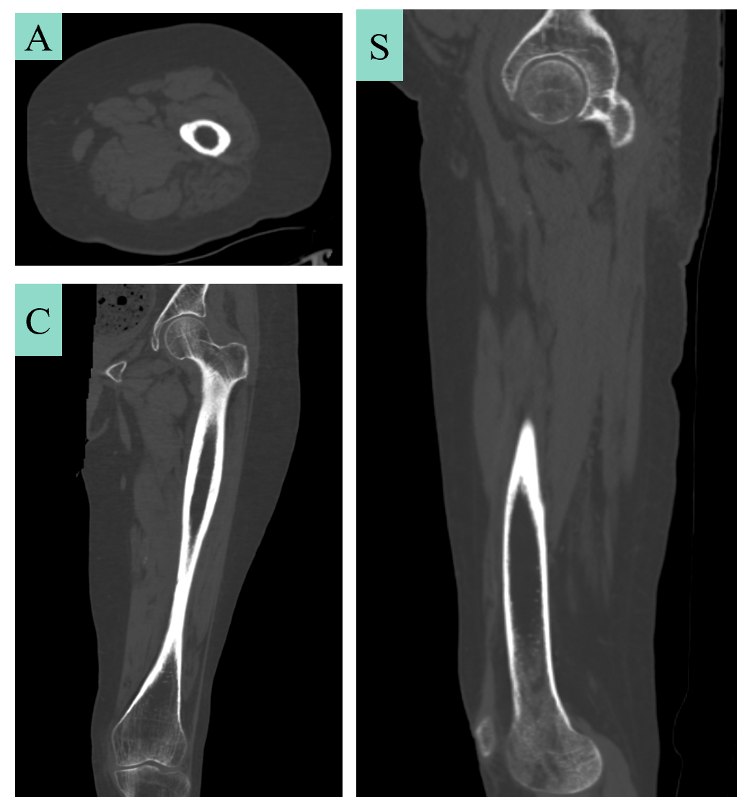
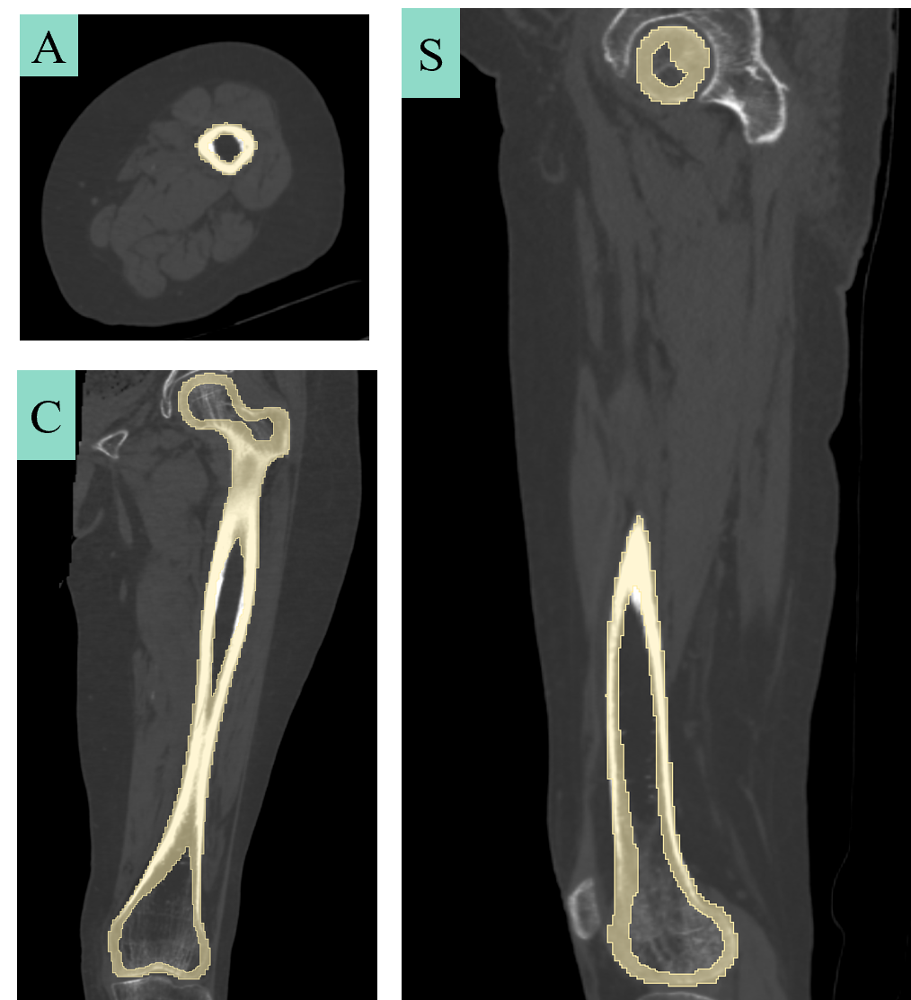
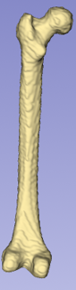
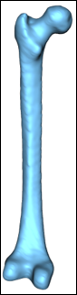
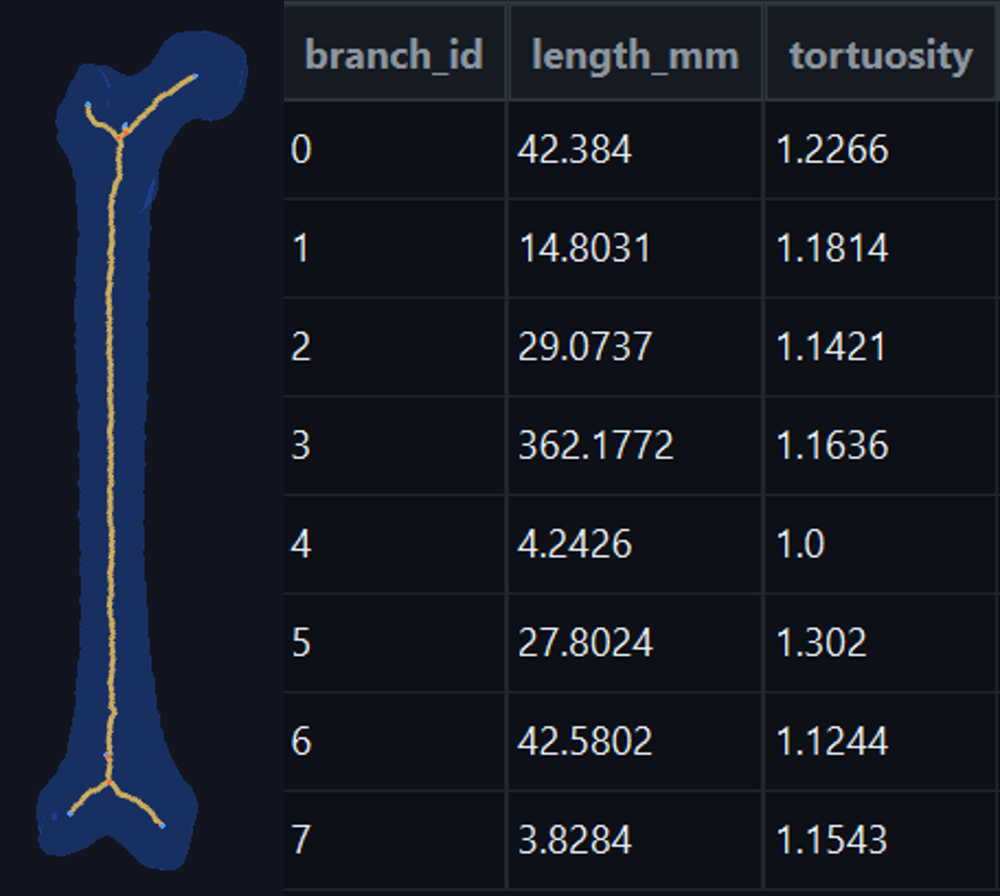
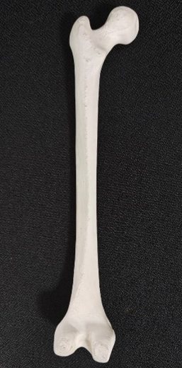

Research Pipeline
From CT Scan to 3D Model
A step-by-step walkthrough of how a raw medical scan becomes a validated 3D mesh — the core of my doctoral research. Scroll to follow the pipeline.
Image Acquisition
The pipeline begins with a CT or micro-CT scan. The output is a stack of 2D grayscale slices — a DICOM or NIfTI volume — where each voxel encodes a Hounsfield unit corresponding to tissue density.
Scan quality, resolution, and slice thickness are the first sources of error. Everything downstream inherits these constraints.

Image Segmentation
The target structure is isolated from surrounding tissue using intensity thresholding, region growing, or learned classifiers. The output is a binary mask — voxels labelled as structure or background.
Class imbalance (structure voxels are a small fraction of the total volume) significantly affects Dice, Jaccard, and Hausdorff metrics. This was a central finding of our phantom-based study.

Marching Cubes Reconstruction
The Marching Cubes algorithm converts the binary voxel mask into a triangulated surface mesh. Each voxel cube is classified by which of its 8 corners lie inside the object, and a lookup table determines the triangle configuration.
The result is a watertight mesh — but one carrying staircase artefacts proportional to voxel size. The statistical distribution of these surface deviations across 9 geometries is the subject of our submitted journal paper.

Mesh Smoothing
Laplacian smoothing iteratively repositions each vertex toward the centroid of its neighbours, reducing jaggedness. But over-smoothing erodes clinically relevant features — thin vessel walls, bifurcations, small-scale morphology.
A spectral stopping criterion was established using the Laplace-Beltrami eigenvalue spectrum to determine the iteration count at which smoothing transitions from beneficial to destructive.

Morphological Analysis
Once a clean mesh is available, structural properties are extracted — branch lengths, diameters, tortuosity, bifurcation angles. Skeletonisation reduces the 3D volume to a 1D graph representing the topology.
A PyQt desktop application was developed for batch morphological analysis of vascular networks and root systems.

3D Printing & Validation
The validated STL is printed on a Formlabs Form 3+ SLA printer (BioM3D Lab). Flexible materials with Shore hardness as low as 80A allow fabrication of anatomically compliant vessels.
Printed phantoms are re-scanned and compared back to the original geometry — closing the loop and quantifying the cumulative error of the full pipeline.
